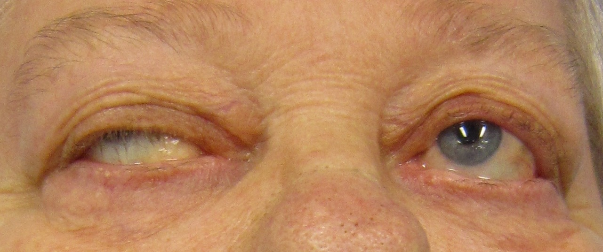

Achado típico · pegadinha
O olho manda — a pupila não
Ptose e diplopia flutuantes — e a pupila? Pupila é SNA, fora do alvo da placa. Olho é porta; miosite poupa olho.
Olho é a porta
A apresentação clínica mais comum da miastenia gravis é o olho (ptose / oftalmoparesia / diplopia).
DM poupa olho
Diferencial com dermatomiosite: a DM poupa o olho; a doença de placa mira o olho. Quando a questão entrega pouco e o achado é ocular flutuante, o raciocínio vai para placa (miastenia), não para miosite que poupa olho.
Pupila = SNA (fora)
Musculatura ocular: intrínseca (pupila) versus extrínseca (movimento ocular e pálpebras).
A MG não mexe com a pupila — pupila é sistema nervoso autônomo (simpático e parassimpático). A MG atinge a movimentação ocular extrínseca e a pálpebra (ptose). A pálpebra tende a cair ao longo do dia / com o uso (olhar para cima prolongado).
Bordão: Olho manda; pupila poupada.

James Heilman, MD, via Wikimedia Commons. Licensed under CC BY-SA 3.0. Source: commons:DiplopiaMG1.jpg

Olho mira · pupila poupa
O achado dominante é extrínseco: pálpebra cai, estrabismo aparece ao esforço de abrir. O olho esquerdo (aberto) mostra íris/pupila de calibre habitual — a pupila não é alvo da placa. Em MG típica a assimetria é a regra, não a exceção.
Assimetria
A doença é bilateral, mas assimétrica: um lado costuma ser pior que o outro — não se espera simetria perfeita.
Diplopia e a caneta
Conjugação normal: os dois olhos acompanham o mesmo alvo e mantêm um foco único. Se um olho acompanha e o outro não, criam-se dois focos → visão dupla (diplopia). Oftalmoparesia (paresia da musculatura ocular extrínseca) gera diplopia.
Manobra de beira de leito: colocar uma caneta à frente do rosto e mandar acompanhar com os olhos — observa-se o olho que vai e o que não vai. Grande motivo clínico de diplopia no contexto de placa: a paresia que quebra a conjugação.
Pegadinha: DM poupa olho; placa mira o olho.
Olho na placa × olho poupado na DM
Placa (MG)
Ptose / oftalmoparesia flutuantes. Pupila poupada. Piora com o uso, melhora com o repouso.
DM (dermatomiosite)
Miosite poupa o olho. Fraqueza proximal de cinturas + pele (heliótropo, Gottron). CPK alta.
Órbita esquemática: pálpebra assimétrica, eixos oculares; chip "pupila = SNA, não MG".
Quiz
Q1. Na MG típica, a pupila:
Gabarito: B. O alvo da MG no olho é extrínseca + pálpebra, não a intrínseca pupilar.
Q2. Dermatomiosite, no diferencial com MG, tende a:
Gabarito: B. DM poupa o olho; MG mira. Quando a queixa é ocular flutuante, a hipótese de placa é mais forte que a de miosite.
Q3. Diplopia na MG se explica prioritariamente por:
Gabarito: B. A paresia extrínseca quebra a conjugação; a caneta na frente do rosto revela quem acompanha e quem não.